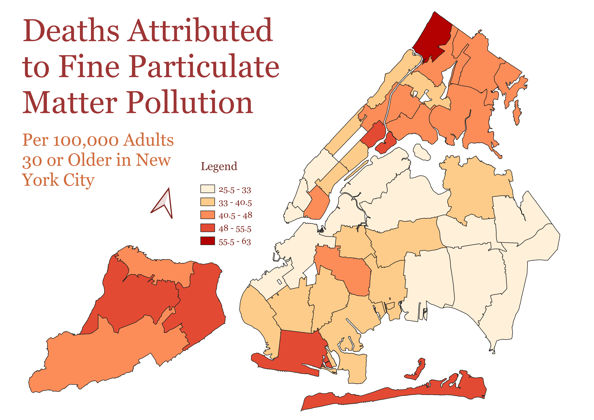

Homework 7
Choropleth Map of Deaths Attributed to Fine Particulate Matter Pollution
This map illustrates the number of deaths per 100 people over 30 in New York City
caused by fine particule matter pollution. There have been numerous studies on the link between climate change-related illnesses
and urban communities, which have always been interesting to me as I hope to study urban planning to make cities more equitable.
When I found this data set, I knew that I could use it to explore how certain forms of pollution impact different areas of New York City,
one of the most notoriously polluted metropoli in the United States.
Although this is not census data, this data set is represented using census tracts as the vector polygons.
The raw Air Pollution CSV had a lot of information. I decided that I wanted to use R to wrangle and clean the data,
which proved to be very efficient. Joining the tables was thus relatively seamless.
To classify the data in QGIS, I used the Equal Interval classification method. To me, this seemed like it was the best way to
visually distribute the data.

GeoJSON File
Source to CSV Data
Clean CSV
Interactive Map